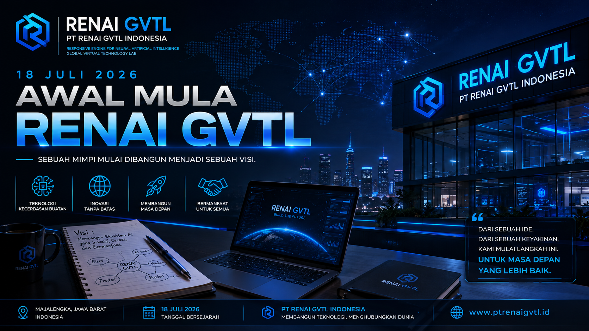

01
Foundation Stage
PT RENAI GVTL Indonesia berada pada Foundation Stage dengan fokus pada pembangunan fondasi organisasi, tata kelola, dokumentasi, sistem kerja, dan arah pengembangan perusahaan.

Foundation Stage — Persiapan Tata Kelola Organisasi serta Legalitas.
PT RENAI GVTL Indonesia adalah perusahaan teknologi asal Majalengka, Jawa Barat, Indonesia yang berfokus pada Artificial Intelligence , riset teknologi, pengembangan perangkat lunak, infrastruktur AI, dan pembangunan ekosistem teknologi RENAI GVTL .
Perusahaan didirikan dan dikembangkan secara independen oleh Founder & Owner Reno Aurora Redian Narendra Wijaya Putra Silvana . Pengembangan teknologi dilakukan secara bertahap melalui riset, eksperimen, dokumentasi, pengembangan sistem, dan pembangunan fondasi organisasi.
PT RENAI GVTL Indonesia merupakan perusahaan teknologi yang berfokus pada Artificial Intelligence, riset, pengembangan perangkat lunak, infrastruktur teknologi, dan ekosistem RENAI GVTL. Perusahaan berada pada tahap Foundation Stage , yaitu tahap pembangunan fondasi organisasi, tata kelola, dokumentasi, riset, dan pengembangan teknologi.
PT RENAI GVTL Indonesia berada pada Foundation Stage dengan fokus pada pembangunan fondasi organisasi, tata kelola, dokumentasi, sistem kerja, dan arah pengembangan perusahaan.
Riset dan eksperimen Artificial Intelligence dilakukan untuk mengeksplorasi pendekatan, arsitektur, dan teknologi yang dapat dikembangkan dalam ekosistem RENAI GVTL.
Pengembangan diarahkan pada perangkat lunak, AI infrastructure, sistem, komponen teknologi, serta proyek seperti RENAI Router dan Chat GVTL.
PT RENAI GVTL Indonesia berada pada Foundation Stage , yaitu tahap persiapan dan pembangunan fondasi perusahaan sebelum memasuki tahap pengembangan organisasi yang lebih luas. Fokus utama pada tahap ini mencakup persiapan tata kelola organisasi, struktur kerja, dokumentasi, sistem internal, serta persiapan legalitas perusahaan secara bertahap.
Tata kelola organisasi sedang dipersiapkan sebagai bagian dari pembangunan fondasi perusahaan. Pengembangan mencakup struktur, tanggung jawab, dokumentasi, proses kerja, dan arah organisasi.
Persiapan legalitas perusahaan dilakukan secara bertahap untuk membangun fondasi administratif dan kelembagaan PT RENAI GVTL Indonesia.
Perusahaan dikembangkan secara independen dari Majalengka dengan fokus pada riset, dokumentasi, pengembangan teknologi, dan pembangunan ekosistem RENAI GVTL.
PT RENAI GVTL Indonesia saat ini berada pada tahap Foundation Stage . Tahap ini berfokus pada persiapan tata kelola organisasi, struktur internal, dokumentasi, sistem kerja, arah pengembangan perusahaan, serta persiapan legalitas secara bertahap.
Status Foundation Stage menunjukkan bahwa perusahaan masih berada dalam proses membangun fondasi organisasi dan administratif sebelum berkembang ke tahap berikutnya.
PT RENAI GVTL Indonesia sedang membangun fondasi organisasi, tata kelola, dokumentasi, dan persiapan legalitas perusahaan secara bertahap.
PT RENAI GVTL Indonesia berada pada tahap Foundation Stage . Fokus tahap ini adalah membangun fondasi organisasi dan mempersiapkan tata kelola perusahaan agar dapat berkembang secara terarah.
Persiapan mencakup struktur organisasi, pembagian fungsi dan tanggung jawab, dokumentasi, sistem kerja, administrasi, serta persiapan legalitas perusahaan.
Informasi mengenai status perusahaan akan diperbarui pada website resmi seiring perkembangan proses organisasi dan legalitas.
PT RENAI GVTL Indonesia
Current Stage:
Foundation Stage
Focus:
Tata Kelola Organisasi
Focus:
Persiapan Legalitas
Origin:
Majalengka, Jawa Barat, Indonesia
PT RENAI GVTL Indonesia dibangun dari Majalengka, Jawa Barat, Indonesia. Namun tempat bermulanya sebuah karya tidak menentukan sejauh mana karya tersebut dapat berkembang.
Membawa karya dari kampung kecil menuju panggung global.
Membangun karya teknologi dari Indonesia, khususnya dari Majalengka, dan membawa hasil pemikiran, riset, inovasi, serta teknologi tersebut menuju jangkauan yang lebih luas hingga tingkat global.
Perjalanan PT RENAI GVTL Indonesia dimulai dari Majalengka. Namun arah perusahaan ditujukan untuk melampaui batas wilayah tempat perusahaan tersebut bermula.
Setiap karya dikembangkan dengan semangat untuk membuktikan bahwa inovasi dapat lahir dari berbagai tempat, termasuk lingkungan yang sederhana.
Dari kampung kecil, membangun karya, menuju panggung global.
PT RENAI GVTL Indonesia percaya bahwa teknologi dapat dikembangkan dari mana saja. Majalengka bukan sekadar lokasi tempat perusahaan bermula, tetapi menjadi bagian dari cerita bagaimana sebuah karya teknologi dibangun dari tahap awal.
Perusahaan ingin bertumbuh melalui karya yang nyata, riset yang konsisten, pengembangan bertahap, dan keberanian untuk membawa hasilnya ke tingkat yang lebih luas.
RENAI GVTL merupakan identitas ekosistem teknologi Artificial Intelligence yang dikembangkan oleh PT RENAI GVTL Indonesia .
Nama RENAI berasal dari gabungan Ren/Reno dan AI atau Artificial Intelligence.
Dalam ekosistem PT RENAI GVTL Indonesia, RENAI menjadi identitas utama yang merepresentasikan arah pengembangan Artificial Intelligence, riset, eksperimen, dan teknologi perusahaan.
Nama resmi perseroan yang menjadi entitas perusahaan pengembang ekosistem RENAI GVTL.
Tentang Perusahaan →Identitas ekosistem teknologi Artificial Intelligence yang dikembangkan oleh PT RENAI GVTL Indonesia.
Lihat RENAI GVTL →Identitas teknologi yang berasal dari gabungan Ren/Reno dan AI, sekaligus digunakan sebagai akronim Responsive Engine for Neural Artificial Intelligence.
Global Virtual Technology Lab , identitas laboratorium dan ekosistem teknologi di dalam RENAI GVTL.
PT RENAI GVTL Indonesia mengembangkan berbagai arah teknologi dalam ekosistem RENAI GVTL. Setiap proyek memiliki tahap pengembangan yang berbeda dan dapat mengalami perubahan selama proses riset dan eksperimen.
Identitas ekosistem Artificial Intelligence yang menjadi salah satu arah utama pengembangan PT RENAI GVTL Indonesia.
Jelajahi RENAI GVTL →
Komponen infrastruktur AI yang dikembangkan sebagai bagian dari arsitektur RENAI GVTL, termasuk routing, metadata, dan provenance.
Lihat RENAI Router →
Platform AI berbasis percakapan yang dikembangkan melalui riset, eksperimen, pengembangan sistem, dan penyempurnaan teknologi.
Jelajahi Chat GVTL →
Arah pengembangan teknologi visual dan generative AI dalam ekosistem RENAI yang berada pada tahap riset, eksplorasi, dan pengembangan.
Lihat Pengembangan →RENAI Router merupakan salah satu komponen infrastruktur teknologi AI yang dikembangkan dalam ekosistem RENAI GVTL.
Pengembangannya diarahkan untuk mengeksplorasi routing, metadata, provenance, integritas data, serta pengelolaan alur teknologi AI.
Teknologi ini terus dikembangkan melalui Research & Development. Arsitektur, fungsi, spesifikasi, dan implementasinya dapat berkembang seiring proses penelitian dan eksperimen.
Pengembangan teknologi PT RENAI GVTL Indonesia dilakukan secara bertahap melalui riset, eksperimen, validasi, arsitektur, pembangunan produk, dan pengembangan ekosistem.
Riset, eksperimen, observasi, dan eksplorasi berbagai pendekatan teknologi Artificial Intelligence.
Pengembangan fondasi arsitektur dan komponen teknologi seperti RENAI Router serta sistem pendukung.
Pengembangan proyek teknologi seperti Chat GVTL melalui proses riset, pengujian, dan penyempurnaan.
Pengembangan ekosistem RENAI GVTL secara bertahap dengan orientasi terhadap kebutuhan teknologi yang lebih luas.
PT RENAI GVTL Indonesia memiliki identitas pengembangan yang berasal dari Majalengka, Jawa Barat, Indonesia. Majalengka menjadi bagian penting dari perjalanan pembangunan perusahaan, riset Artificial Intelligence, dan pengembangan teknologi RENAI GVTL.
PT RENAI GVTL Indonesia mengembangkan teknologi dari Indonesia dengan fokus pada Artificial Intelligence, perangkat lunak, dan infrastruktur teknologi.
Jawa Barat menjadi bagian dari identitas geografis perusahaan dan perjalanan pengembangan teknologi RENAI GVTL.
Majalengka merupakan asal pengembangan PT RENAI GVTL Indonesia dan bagian penting dari identitas perusahaan.
Website ini merupakan website resmi PT RENAI GVTL Indonesia yang digunakan untuk menyampaikan informasi mengenai identitas perusahaan, perjalanan organisasi, founder, technology leadership, riset, pengembangan Artificial Intelligence, serta ekosistem teknologi RENAI GVTL.
Website ini juga menjadi dokumentasi perkembangan perusahaan, termasuk pembangunan organisasi, tata kelola, riset, eksperimen, pengembangan teknologi, dan perjalanan ekosistem RENAI GVTL.
Dokumentasi perkembangan perusahaan, teknologi, riset, dan proyek RENAI GVTL melalui berita dan catatan resmi.

Chat GVTL dikembangkan dengan RENAI Router sebagai bagian dari riset dan pengembangan teknologi.
Product / Development
Catatan awal perjalanan pembangunan perusahaan teknologi PT RENAI GVTL Indonesia.
Company / Foundation
Mengenal Founder dan visi dalam membangun fondasi teknologi RENAI GVTL.
Founder / Vision
Founder dan Owner PT RENAI GVTL Indonesia yang mendirikan dan mengembangkan perusahaan serta memegang arah pendirian, kepemilikan, visi, dan pembangunan fondasi perusahaan serta ekosistem RENAI GVTL.
Pengembangan perusahaan dimulai dari Majalengka, Jawa Barat, Indonesia, dengan fokus pada riset Artificial Intelligence, pengembangan perangkat lunak, dan pembangunan teknologi secara bertahap.
Fungsi teknologi dan riset menjadi bagian dari pembangunan fondasi teknis PT RENAI GVTL Indonesia dan pengembangan ekosistem teknologi RENAI GVTL.
PT RENAI GVTL Indonesia terus mengembangkan struktur organisasi dan fungsi kepemimpinan untuk mendukung pertumbuhan perusahaan.
Founder & Owner memegang arah pendirian, kepemilikan, visi, dan pembangunan perusahaan.
Fungsi teknologi dan riset didukung melalui peran Chief Technology Officer (CTO) untuk mendukung pembangunan ekosistem RENAI GVTL, termasuk RENAI Router, Chat GVTL, RENAI Image, dan eksplorasi teknologi Artificial Intelligence lainnya.
PT RENAI GVTL Indonesia merupakan perusahaan teknologi asal Majalengka, Jawa Barat, Indonesia yang berfokus pada Artificial Intelligence, riset teknologi, pengembangan perangkat lunak, infrastruktur AI, dan pembangunan ekosistem RENAI GVTL.
Perusahaan didirikan dan dikembangkan oleh Reno Aurora Redian Narendra Wijaya Putra Silvana sebagai Founder & Owner.
PT RENAI GVTL Indonesia saat ini berada pada tahap Foundation Stage , dengan fokus pada persiapan tata kelola organisasi serta legalitas perusahaan secara bertahap.
Ekosistem RENAI GVTL mencakup berbagai arah pengembangan teknologi seperti RENAI Router, Chat GVTL, RENAI Image, serta penelitian dan eksperimen Artificial Intelligence lainnya.